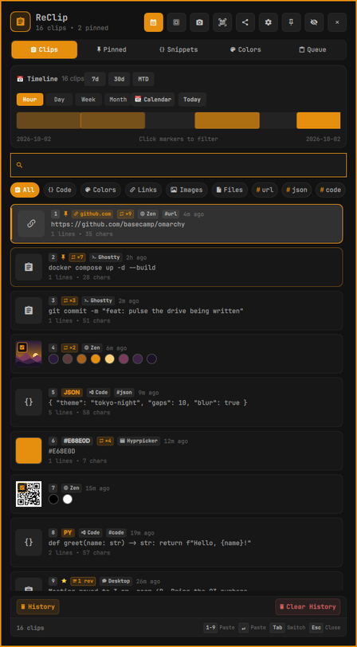
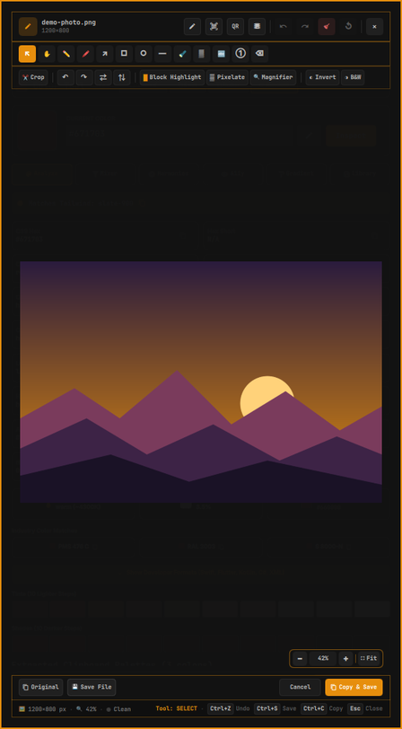
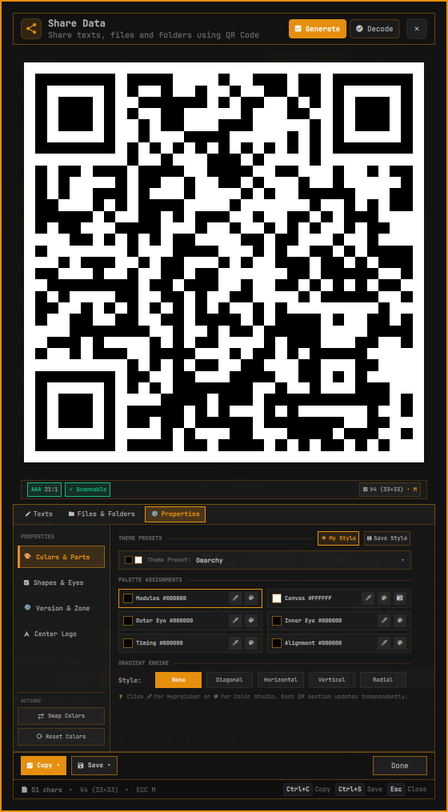
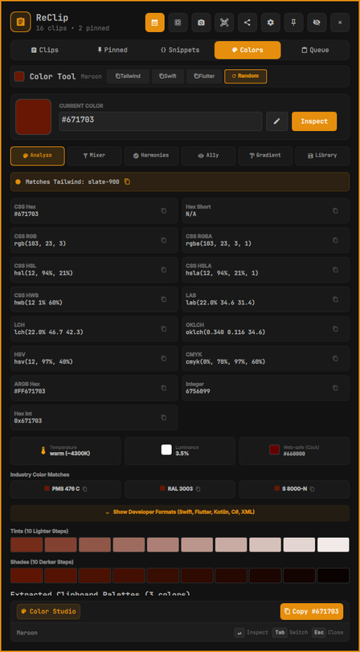

A keyboard-driven clipboard manager, snippet library and media studio,
built for Omarchy and Hyprland.




Text, links, code, colors and images, with dedup and revisions.
Paste clips in order, or slots 1–9 from the keyboard.
Arrows, text, blur, pixelate, crop, layers and palettes.
Generate and scan codes; send files to a phone, no cloud.
Copy the text in any screen region, with tesseract.
30+ transforms (JSON, Base64, case, hash) and a diff view.
Eyedropper, harmonies, contrast checks and gradients.
Skips password managers; blacklist and incognito mode.